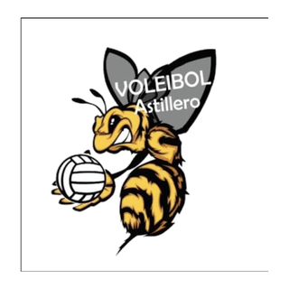
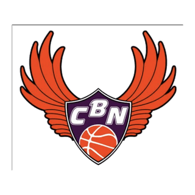
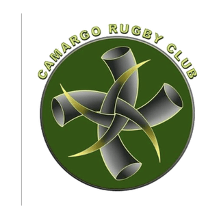

Sistema de entrenamiento humano / 001
Freddy Entrenamiento
El
Método
"Soy el amo de mi destino, soy el capitán de mi alma."
Temporada 2026/2027 Proyectos deportivos
- Instituto Municipal de Deportes de Santander Técnico deportivo · Escuela Municipal de Rugby
- Federación Cántabra de Rugby Promoción autonómica · Federación Cántabra de Rugby
-

Superliga Femenina 2 Preparador físico · A.D. Voleibol Astillero -

1ª División Nacional Femenina Preparador físico · C.B. Némesis Santander -

Camargo Rugby Club Promoción local · Camargo Rugby Club - Unión Rugby Besaya Técnico deportivo · Unión Rugby Besaya
Mod_01 // Estructura
Entrenamiento
Precisión
Cada entrenamiento es el cincel que, ejercicio a ejercicio, rompe la roca de tus límites y libera tu obra maestra: tu potencial.
Entrar a tu EntrenamientoMod_02 // Sustrato
Nutrición
Cada elección en tu plato es el sustrato que, comida a comida, nutre tu trabajo y hace florecer tu estructura: tu mejor versión.
Entrar a SustratoMod_03 // Razón
Psicología
Cada reflexión es la razón que, pensamiento a pensamiento, forja tu mentalidad y enciende un motor inagotable: tu voluntad.
Entrar a RazónMod_04 // Novedades
Últimas publicaciones
Cargando publicaciones…